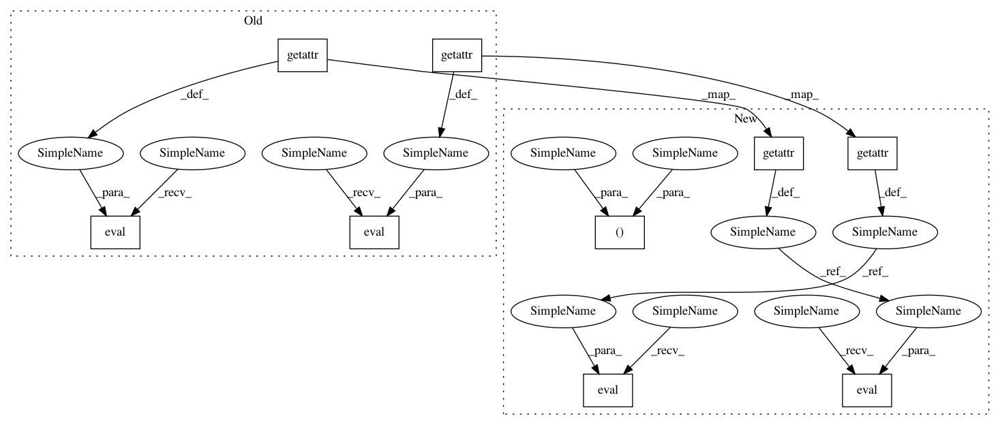

f99f633725815635a1cf24aa2dd70bdb094ed7aa,tests/keras/backend/backend_test.py,,check_two_tensor_operation,#,135
Before Change
z = k.eval(getattr(k, function_name)(
k.variable(x_val), k.variable(convert_kernel(y_val)), **kwargs))
elif concat_args:
z = k.eval(getattr(k, function_name)(
[k.variable(x_val), k.variable(y_val)], **kwargs))
else:
z = k.eval(getattr(k, function_name)(
k.variable(x_val), k.variable(y_val), **kwargs))
else:
z = k.eval(getattr(k, function_name)(
x_shape_or_val, y_shape_or_val, **kwargs))
z_list += [z]
After Change
t, f = cntk_func_two_tensor(function_name, x_shape, y=y_val, **kwargs)
z = f([x_val])[0]
elif (k == KC) & (cntk_two_dynamicity):
t, f = cntk_func_two_tensor(function_name, x_shape, y=y_shape, **kwargs)
z = f([x_val, y_val])[0]
elif (k == KTH) & (function_name[:4] == "conv"):
t = getattr(k, function_name)(
k.variable(x_val), k.variable(convert_kernel(y_val)), **kwargs)
z = k.eval(t)
elif concat_args:
t = getattr(k, function_name)(
[k.variable(x_val), k.variable(y_val)], **kwargs)
z = k.eval(t)
else:
t = getattr(k, function_name)(
k.variable(x_val), k.variable(y_val), **kwargs)
z = k.eval(t)
else:
t = getattr(k, function_name)(x_shape_or_val, y_shape_or_val, **kwargs)
z = k.eval(t)
t_list += [t]
In pattern: SUPERPATTERN
Frequency: 3
Non-data size: 9
Instances
Project Name: keras-team/keras
Commit Name: f99f633725815635a1cf24aa2dd70bdb094ed7aa
Time: 2018-08-13
Author: ybliang8@gmail.com
File Name: tests/keras/backend/backend_test.py
Class Name:
Method Name: check_two_tensor_operation
Project Name: keras-team/keras
Commit Name: f99f633725815635a1cf24aa2dd70bdb094ed7aa
Time: 2018-08-13
Author: ybliang8@gmail.com
File Name: tests/keras/backend/backend_test.py
Class Name:
Method Name: check_two_tensor_operation
Project Name: keras-team/keras
Commit Name: f99f633725815635a1cf24aa2dd70bdb094ed7aa
Time: 2018-08-13
Author: ybliang8@gmail.com
File Name: tests/keras/backend/backend_test.py
Class Name:
Method Name: check_single_tensor_operation